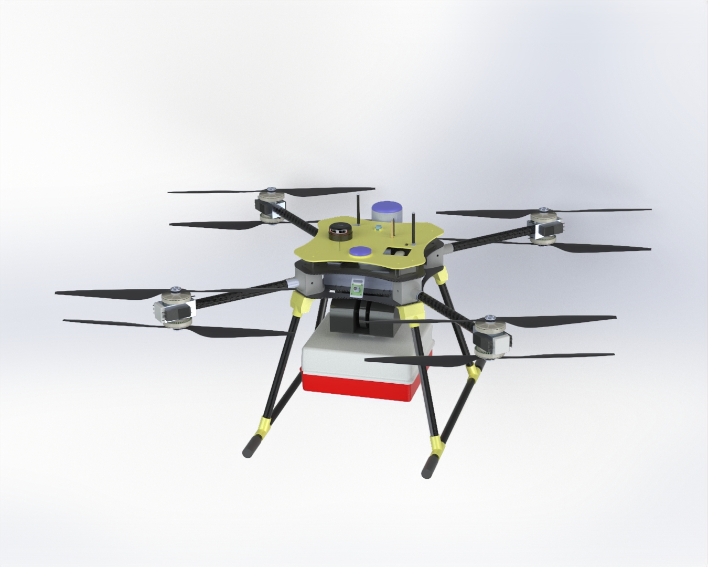
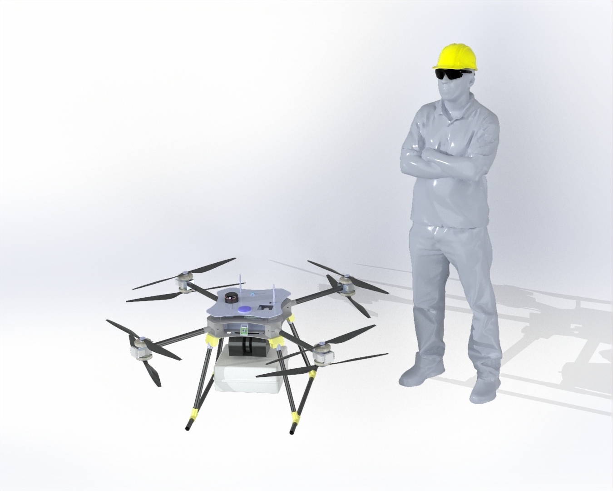

Veículo Aéreo Não Tripulado para Entrega Rápida de Kits de Emergência em Contexto Urbano.

A paragem cardiorrespiratória constitui uma das principais causas de mortalidade evitável em contexto urbano. Em cidades densamente povoadas como Lisboa, o congestionamento rodoviário condiciona o tempo de resposta dos meios terrestres de emergência médica. Sabemos que cada minuto decorrido sem acesso a um Desfibrilhador Externo Automático (DEA) reduz a probabilidade de sobrevivência em aproximadamente 10%.
O CORVUS X8 atua de forma autónoma, com supervisão humana, garantindo a entrega do kit médico muito antes da chegada dos meios terrestres.

Ambiente de simulação Software In The Loop (SITL) e Gazebo Harmonic para validação da dinâmica do VANT (OctaQuad X) e deteção de obstáculos em cenário urbano hospitalar.